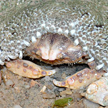
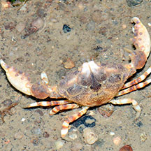

|
|
| crabs text index | photo index |
| Phylum Arthropoda > Subphylum Crustacea > Class Malacostraca > Order Decapoda > Brachyurans > Family Portunidae |
| Banded-leg
swimming crab Charybdis annulata* Family Portunidae updated Oct 2016 Where seen? This swimming crab with bands on its legs is sometimes seen on some of our rocky and reefy shores, especially at night. Features: Body width 5-7cm. Body somewhat fan-shaped with 6 spines on the sides. The eyes are not wide apart. Last pair of legs are paddle-shaped and rotate like boat propellers, so the crab swims well in all directions. It is a fully marine crab and cannot live long out of water. Body colours include plain olive, greenish grey, orange. The legs have alternating bands of dark brown and bright blue. The tips of the pincers are also banded dark brown and bright blue. There is a fine network of brown lines on the pincers. |
 Sentosa, Jul 08 |
 East Coast, May 11 |
 |

*Species are difficult to positively identify without close examination.
On this website, they are grouped by external features for convenience of display.
| Banded-leg swimming crabs on Singapore shores |
| Photos of Banded-leg swimming crabs for free download from wildsingapore flickr |
| Distribution in Singapore on this wildsingapore flickr map |
 Changi, Jun 16 |
 |
| Acknowledgements Grateful thanks to Crabhunter for confirmation of ID. Links
|
|
|